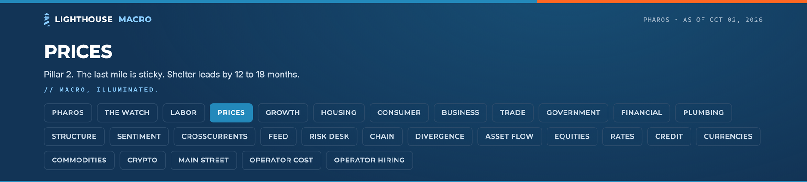
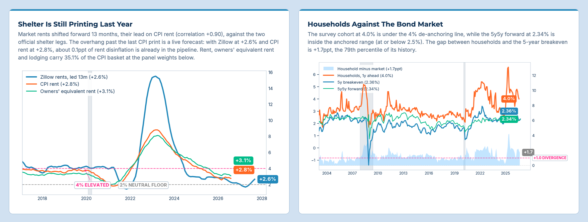
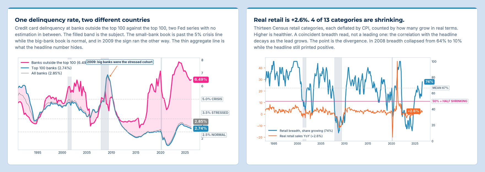

Welcome to Lighthouse Macro. We write institutional-grade macro research for two kinds of readers. The first trades on the macro picture: funds, allocators, individual investors. The second lives with it without ever placing a trade: business owners, operators, the people running budgets and payrolls and hiring plans. The same data answers different questions for each of them, and we try to answer both.
Lighthouse Macro was founded by Bob Sheehan, CFA, CMT after roles on a macro-equity strategy & multi-asset book at Bank of America Private Bank. Following that, he landed in more traditional macro focused roles on the sell side boutique Trahan Macro Research and then back on the buyside, as the 2nd member of Strom Capital Management, a Discretionary Macro fund where he produced research directly alongside the CIO.
Most recently he was VP of Data & Analytics at EquiLend. If you’d rather hear how we think before you read it, start with his conversation on Blockworks’ Forward Guidance, How To Trade The New Warsh Fed.
The philosophy fits in a line: flows over stocks. How fast something is changing usually tells you more, and sooner, than where it sits. By the time a headline number moves, the story underneath it is mostly over.
Everything we publish runs through one framework, the Diagnostic Dozen: twelve pillars of the economy across three engines. Each pillar got its own free deep dive on what it measures, how it connects to the others, and the thresholds we watch.
The piece that introduced it, Why Most Americans Don’t Care About Your Market Call, is the best place to see why it’s built this way. The Foundation Is Set. Now We Build. ties all twelve together.
The framework, the history and Marginal Matters are free. The live readings, the positioning and the forward views sit with paid subscribers.
Pharos is the terminal the research is built on. Every board recomputes from our master database with each build, and every chart carries its own read and its sources. It comes with the Complete subscription.



Join the WatchSign in to Pharos
For decks, monthly/quarterly meetings, or advisory work, write to advisory@lighthousemacro.com.
For custom research requests or institutional settings, write to research@lighthousemacro.com.